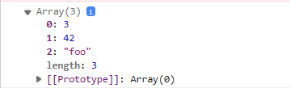

function mainFunction(callback) {
console.log("Performing operation...");
setTimeout(function() {
callback("Operation complete");
}, 1000);
}
function callbackFunction(result) {
console.log("Result: " + result);
}
mainFunction(callbackFunction)
for(let i=1;i<=7;i++)
{
setTimeout(()=>
{
console.log(i);
},1000*i)
}
let p="yes";
function promiseFun(p){
return new Promise ((res,rej)=>{
if(p==="yes"){
res("Promise resolved...");
}else{
rej("Promise rejected...");
}
})
}
// handel the promise
promiseFun(p)
.then((item)=>{console.log(item)})
.catch((err)=>{console.log(err)});
function myDisplayer(something) {
document.getElementById("demo").innerHTML = something;
}
function myCalculator(num1, num2, myCallback) {
let sum = num1 + num2;
myCallback(sum);
}
myCalculator(5, 20, myDisplayer);
Using a callback, you could call the calculator function (myCalculator) with a callback (myCallback), and let the calculator function run the callback after the calculation is finished:In the example above, myDisplayer is a called a callback function. It is passed to myCalculator() as an argument.
function print(i){
console.log("This is call number "+i);
}
function fun1(callback){
setTimeout(()=>{
let i = 1 ;
callback(i); i++ ;
setTimeout(()=>{
callback(i); i++;
setTimeout(()=>{
callback(i); i++ ;
setTimeout(()=>{
callback(i); i++ ;
setTimeout(()=>{
callback(i); i++ ;
// .... and so on
}, 800)
}, 700)
}, 500)
}, 300)
}, 100)
}
// Calling fun1 with print function as parameter
fun1(print);
we can see the complexity of calling the Callback method in a nesting method. The code becomes difficult to comprehend and debug.
Syntax:
let promise = new Promise(function(resolve, reject){
//do something
});
let promise = new Promise(function (resolve, reject) {
resolve('Messages');
})
promise
.then(function (successMessage) {
//success handler function is invoked
console.log(successMessage);
}, function (errorMessage) {
console.log(errorMessage);
});
Explaination- It has two parameters resolve,reject.the .then statement is executed, the resolve() method print the message.
async function myDisplay() {
let myPromise = new Promise(function(resolve, reject) {
resolve("Hello Prepbytes");
});
document.getElementById("demo").innerHTML = await myPromise;
}
myDisplay();
Async: It simply allows us to write promises-based code as if it was synchronous and it checks that we are not breaking the execution thread. It eliminates the need of the .then() and .catch() methods of promises. All you have to do is put an async word before the function, which we want to make a promise.
const promise1 = Promise.resolve(3);
const promise2 = 42;
const promise3 = new Promise((resolve, reject) => {
setTimeout(resolve, 100, 'foo');
});
Promise.all([promise1, promise2, promise3]).then((values) => {
console.log(values);
});
Explaination-The Promise.all() static method takes an iterable of promises as input and returns a single Promise.
